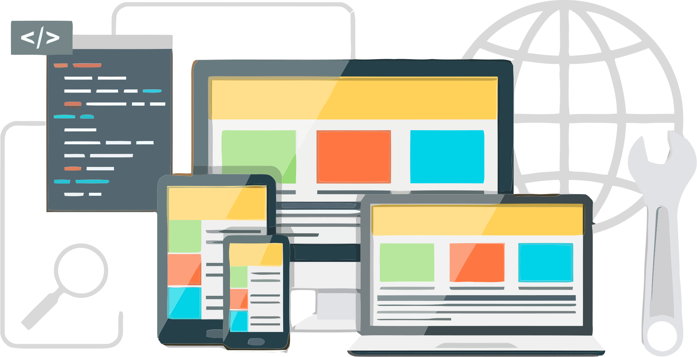

Website design and development
Living in the digital world, a website is crucial for any business. If you have a business and don’t have a website, you are probably losing out on opportunities for your business. A website can be used to accomplish many different marketing strategies to help your business grow. The web has a far more extensive reach than any other form of advertising. Your website will be the center of your company’s online presence. A well designed, informative and updated website will add credibility to your business and strengthen your brand. If you want to be successful for your company in the modern marketplace, you’ve got to have a professional website. The importance of a website for marketing extends to every aspect of your digital marketing strategy.
Requirement Analysis and Planning
Requirement gathering and analysis is the first stage and major stage of any SDLC model. This phase is the brainstorming phase because it has the many substages for like Feasibility Analysis Stages to check how much idea can put into action for development. In this Stages, communication taking place between stakeholders, end users and the project team. So, all the person which are related to the project, and they gather information for software development. Identify and capture stakeholder requirements using customer interviews and surveys. Build multiple use cases to describe each action that a user will take on the new system. In that a brand-new software development takes place more requirement gathering process for development and in other already build software not need too much information and data gathering process.
UI/UX design
Social platforms help you connect with your customers, increase awareness about your brand, and boost your leads and sales. With more than three billion people around the world using social media every month, the users and engagement on major platforms just keep increasing. It doesn’t matter if you run a small local shop or a big national company. Social media is an essential piece of your business marketing strategy.
Development
The frontend of a website is what you see and interact with on your browser. Also referred to as “client-side”, it includes everything the user experiences directly: from text and colors to buttons, images, and navigation menus. The backend or “server-side” is the part of the website you do not see. It handles storing and organizing data and ensuring everything on the client-side works. The backend communicates with the front-end, sending and receiving information to be displayed as a web page. Whenever you fill out a contact form, type in a web address, or make a purchase (any user interaction on the client-side), your browser sends a request to the server-side, which returns information in the form of frontend code that the browser can interpret and display.
Domain and Hosting
A domain name is your website’s address on the internet where people can access your website. It is something that internet users type in the browser’s URL bar to visit your site. Domain names have two parts separated by a dot. The first part is your brand name which can have any combination of letters and numbers, like brandingflare, while the second part is a domain extension like .com, .org, .net, .com.uk, etc. Each domain is a unique web address. This means that there can be only one monsterinsights.com in the world.
The Web hosting is the storage location where your website content files are placed. It’s like the home of your website. If your domain name was the address of your house, then the actual house is your hosting server. You need both a domain name and web hosting to create a website. When a user tries to access your website by entering your web address (domain name) in the browser’s URL bar, the domain name points them to the files stored in the web server. Then, they can see your website online.
Types of websites
Static and dynamic websites
There are many static websites on the Internet, you won’t be able to tell immediately if it is static, but the chances are, if the site looks basic and is for a smaller company, and simply delivers information without any bells and whistles, it could be a static website. Static websites can only really be updated by someone with a knowledge of website development. Static websites are the cheapest to develop and host, and many smaller companies still use these to get a web presence. Dynamic sites on the other hand can be more expensive to develop initially, but the advantages are numerous. At a basic level, a dynamic website can give the website owner the ability to simply update and add new content to the site. For example, news and events could be posted to the site through a simple browser interface.
- Business – generic website detailing all areas of a business.
- Blog – online journal or informational page that is regularly updated.
- Brochure – one or two page-website displaying a company’s basic information.
- Crowdfunding – used for accepting pledges and donations for any given cause.
- Ecommerce – website selling products or services.
- Educational – usually an interactive website with educational information on any given topic.
- Media or Entertainment – regularly updated content on current affairs, sports, and entertainment.
- Nonprofit – like business websites but encouraging visitors to assist with any given cause.
- Personal – online resume displaying your work experience and kills.
- Portal – typically internal websites for schools or businesses where users log in to systems.
- Portfolio – online portfolio displaying your creative work.
Tech Stacks
Frontend Tech Stack
The frontend tech stack is the client’s side of the application. Client-side refers to anything that a user can see or engage with on a screen. The main concern of the frontend stack is to create a stellar user experience, smooth user interface, and straightforward internal structures. In other words, it is responsible for the design, format, and navigation of websites or web apps. The frontend stack includes these elements:
- HTML (Hypertext Markup Language) – it’s a markup language for creating and displaying electronic documents (web pages). They are the backbone in the organization and placement of content on a web page.
- CSS (Cascading Style Sheets) – It is responsible for the format and layout of the web pages. It includes the font styles, sizes, layout, color, and other aspects of a web page.
- JS (JavaScript) – To make web pages interactive, you use JavaScript. It’s a programming language that allows you to implement dynamic features on web pages; through its libraries (React, jQuery, and Ember) and frameworks (Angular.js, Ember.js, Vue.js).
Backend Tech Stack
The server-side of software development is the backend tech stack. It refers to the inner workings of a website or app that users cannot see. Think of it like the electric power stations that generate electricity for your home. They may seem invisible in the background, but they are important to keep the operations running smoothly. The backend stack includes these elements:
- Programming languages – This creates logic for apps and websites. The codes link the web to a database. Some examples are JavaScript, PHP, and Python
- Frameworks – it provides support of applications based on a single programming language. Laravel, Django, and Ruby on Rails are few of the popular frameworks
- Servers – You need backend servers to manage client requests. Apache, Nginx, and Microsoft’s Internet Information Server (IIS) are great examples of web servers.
- Databases – It’s a digital space to store data (word document, web page, MP3 file). MongoDB, PostgreSQL, and MySQL are common databases.
Full stack web development models
MEAN Stack
One of the well-known tech stacks, MEAN brings numerous benefits to web developers. Among these benefits are the use of a single language (JavaScript) and the underlying technologies are open source and free. MEAN provides a practical approach to creating fast and highly efficient apps. All the components speak JSON (JavaScript Object Notations) for data transmission and free module library access. This tech stack helps to build scalable software products. It’s great for all types of websites and interactive applications. MEAN consists of:
- • MongoDB (NoSQL database)
- • Express.js backend web framework
- • Angular.js frontend framework
- • NodeJS open-source, cross-platform server
MERN Stack
Essentially MERN is similar to MEAN. The difference is that you change Angular.js with React. The key benefits of using MERN are the React integration, the ability to use codes on browsers and servers simultaneously, powerful library, and full-stack development option (frontend and backend). Additionally, React is known for its flexibility and performance in developing interactive user interfaces.